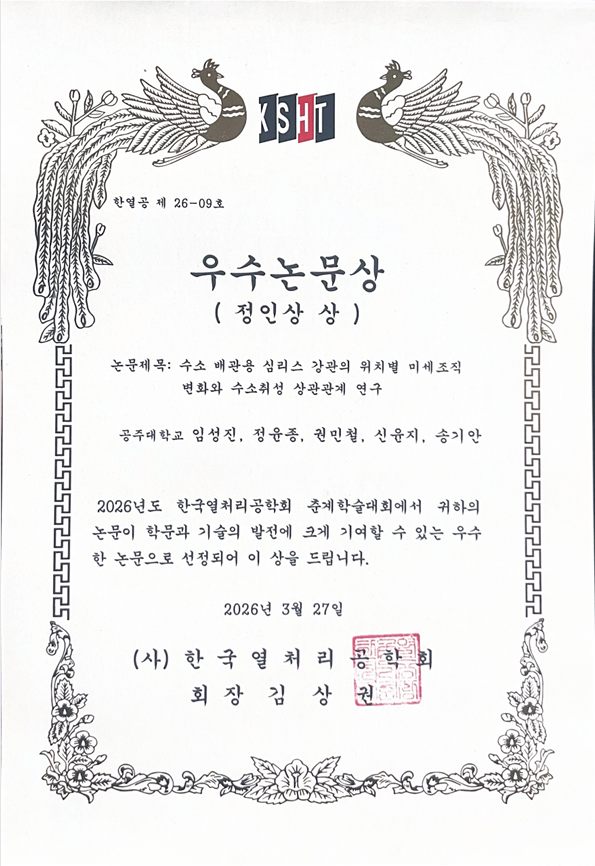

금속재료학회 및 공동연구 활동
2025 추계·춘계 금속재료학회와 관련 활동.
News & Awards
학회, 공동연구, 워크숍, 수상 기록을 소개합니다.
소식과 수상 (News & Awards)

활동 (Activities)
학회, 국제공동연구, 워크숍, 학위수여식, 연구실 MT 활동입니다.
2025 추계·춘계 금속재료학회와 관련 활동.
국제공동연구, 추계·춘계 학회, 하계 lab workshop.
TMS conference, 금속재료학회, 학위수여식, 동계 lab MT 등.
활동 사진 (Activity Gallery)